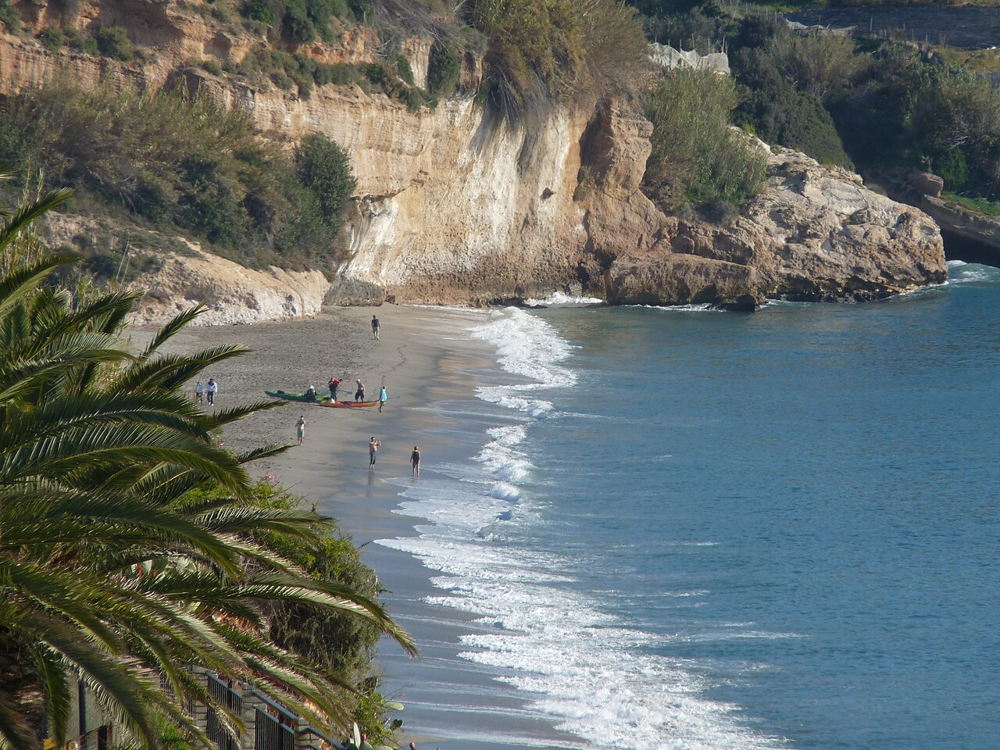
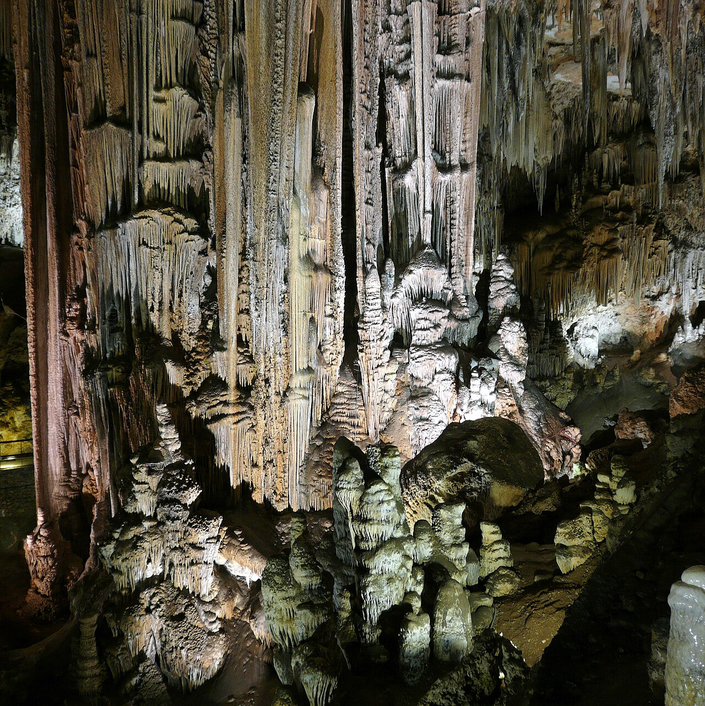
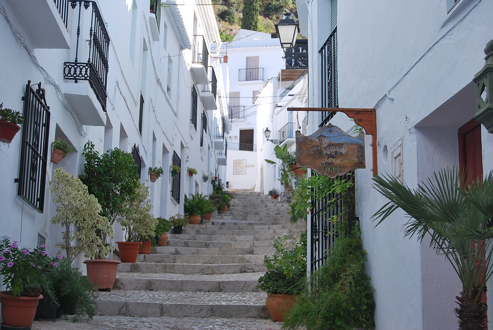
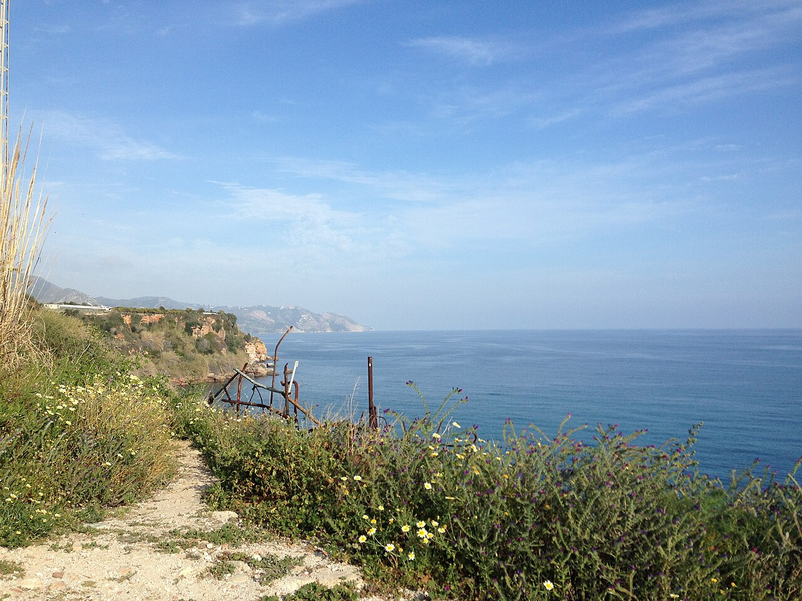
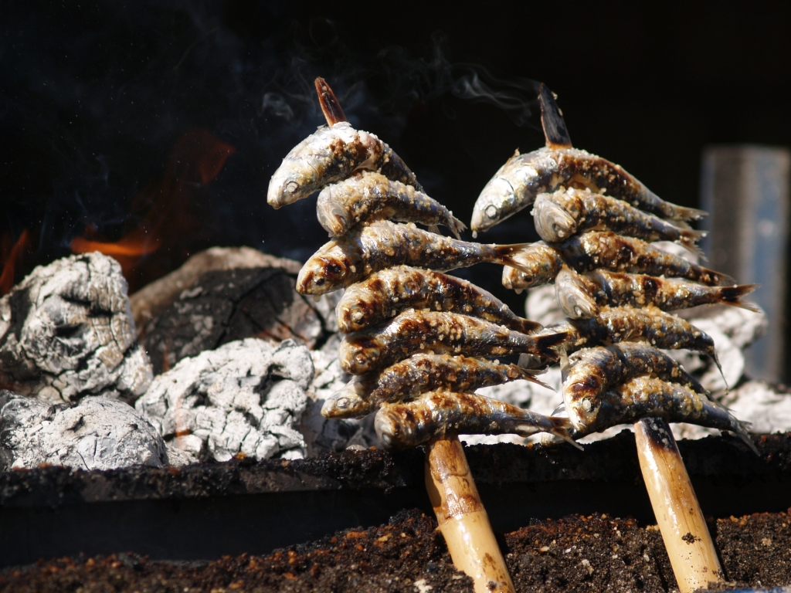

La semana
Siete días con una sola maleta que se deshace una vez: dormís las seis noches en Nerja y el coche está para trayectos cortos. El desplazamiento más largo de toda la semana es el día de Málaga, y es una hora de autovía. Todo lo demás está a menos de cuarenta minutos.
- Tren Madrid → Málaga María Zambrano · 2 h 30 · coche de alquiler en la estación
- Lunes 7 · Llegada y Balcón de Europa
Málaga → Nerja en coche (1 h). Tarde de paseo, el Balcón al atardecer y primera cena junto al mar.
- Martes 8 · Cuevas de Nerja y Frigiliana
La cueva a primera hora, comida tranquila y el pueblo blanco a media tarde, cuando deja de pegar el sol.
- Miércoles 9 · Las calas de Maro
El paraje natural: playa de Maro, la cascada y, si os animáis, kayak por los acantilados. Sin horarios.
- Jueves 10 · El río Chíllar
Andar por dentro del río con el agua por las rodillas hasta los Cahorros. La mañana más divertida de la semana.
- Nerja → Málaga · 1 h por la A-7
- Viernes 11 · Málaga capital
Alcazaba, Gibralfaro, el centro, el Picasso si apetece y espetos en Pedregalejo al atardecer.
- Sábado 12 · Playa y nada más
Burriana con hamaca, o las calas de la carretera de Maro. El día sin plan, y el último completo.
- Domingo 13 · Último baño y vuelta
Mañana en Nerja según la hora del tren, coche a Málaga, entrega en la estación y de vuelta.
El mapa de la semana
Todo lo de esta guía cabe en este trozo de mapa. Nerja está en el extremo oriental de la provincia, con la sierra de Almijara detrás cortando el viento del norte y los pueblos blancos colgados de sus laderas. Málaga capital queda a una hora larga por autovía; el resto, a menos de cuarenta minutos.
Cómo leer el mapa
Maro 8 min · Frigiliana 15 min · Torrox 20 min · Almuñécar 25 min · Torre del Mar 30 min · Cómpeta 40 min · Vélez-Málaga 30 min · Málaga capital 1 h 05.
Nerja y Maro — el sitio donde volvéis cada noche
Lunes 7 → domingo 13 de septiembreNerja son 22.000 habitantes colgados de un acantilado bajo, con la sierra de Almijara detrás cortando el viento del norte. El casco viejo se recorre andando en veinte minutos y todo pasa alrededor del Balcón de Europa. En septiembre está lleno pero ya no desbordado: la segunda quincena de agosto se ha ido y el agua sigue a 24 grados.
Día 1 · Llegada y primer atardecer lunes 7 de septiembre
Tren a Málaga María Zambrano, coche de alquiler en la propia estación y una hora larga por la A-7 hasta Nerja. Dejáis las cosas, y lo primero es bajar al Balcón de Europa a última hora de la tarde: es cuando la luz da de lleno en los acantilados del este y cuando el pueblo sale a pasear. Cena tranquila por la zona de Carabeo y a dormir pronto, que mañana toca madrugar.
Día 2 · Mañana: las Cuevas de Nerja martes 8 de septiembre
Cinco minutos en coche hasta Maro. Abrid a la primera hora que haya: es la visita más concurrida de la comarca y a media mañana entran los autobuses. Dentro son unos 45 minutos por pasarelas, con 18 grados constantes, y la sala del Cataclismo tiene una columna de 32 metros — la mayor del mundo. Al salir, el mirador de la entrada da a toda la costa. Por la tarde subís a Frigiliana, que está aquí al lado.
Día 3 · Las calas de Maro, sin horarios miércoles 9 de septiembre
El día de mar de verdad. La playa de Maro está a ocho minutos en coche y es la mejor de la zona: agua transparente, grava fina y una cascada cayendo a un lado de la cala. Si os apetece algo más, hay salidas de kayak y paddle surf de unas tres horas que recorren los acantilados y llegan a calas donde no se entra por tierra — se reservan la víspera y salen a primera hora, antes de que entre viento. Comida en el chiringuito y tarde de no hacer nada.
8:00 · El acueducto y el mirador. Sube en coche los cinco minutos hasta Maro y párate en el acueducto del Águila, cuatro pisos de arcos de 1880 sobre el barranco, que a esa hora tienes para ti solo. Desde allí sigue al mirador del paraje: se ve la costa entera hasta el cabo. Media hora y estás de vuelta con el pan.
Zona para juntaros: el aparcamiento de la playa de Maro, que es donde vais a acabar de todas formas.
Día 4 · El río Chíllar jueves 10 de septiembre
El plan más divertido de la semana, y no se parece a nada: se anda kilómetros por dentro del cauce, con el agua entre los tobillos y las rodillas, entre paredes de roca que se estrechan hasta dejar dos metros de paso (los Cahorros). Se sale del aparcamiento de la Fábrica de la Luz. Ida y vuelta hasta la primera poza son unas 2 h 30; hasta los Cahorros, 5 horas. Tarde: comida tardía y playa urbana, que después del río no apetece conducir.
Día 6 · Playa y nada más sábado 12 de septiembre
El día sin plan, que también hay que tenerlo, y el último completo. Burriana con hamaca y sombrilla alquiladas, la paella del Merendero Ayo a mediodía y siesta. Si el snorkel o el kayak os quedaron pendientes el miércoles, este es el día de recuperarlos: salen de esta misma playa. Y si preferís sitio tranquilo, las calas de la carretera de Maro —Las Alberquillas y Molino de Papel— no tienen ni servicios ni gente. Por la tarde, el último paseo por el Balcón y cena donde más os haya gustado de la semana.
Día 7 · Último baño y vuelta domingo 13 de septiembre
Depende de la hora del tren. Si sale por la tarde, da tiempo a un último baño en Calahonda —la cala pequeña que queda justo debajo del Balcón—, a una comida sin prisa y a un café en el Balcón antes de coger el coche. Contad 1 h 15 hasta la estación con el margen de entregar el coche, que en María Zambrano el parking de devolución tiene su cola.


Lo básico que ver, sin salir del municipio
- Balcón de Europa — el mirador sobre los restos del castillo. De día es un pasillo de gente; a las 8 de la mañana y a la hora de cenar es otra cosa.
- Cuevas de Nerja — 5 km al este, en Maro. La columna de 32 m y pinturas rupestres que se han datado en más de 40.000 años.
- Acantilados de Maro-Cerro Gordo — paraje natural protegido de 12 km de costa con las mejores calas de la provincia.
- Río Chíllar — el cañón que se recorre andando por el agua. Es lo más singular que tenéis a mano.
- Acueducto del Águila — cuatro pisos de arcos de 1880 sobre el barranco de Maro, junto a la carretera de la cueva.
- La barca de Chanquete — sí, la de Verano azul. Está en un parque del pueblo y la gente se sigue haciendo fotos con ella cuarenta y cinco años después.
Qué y dónde comer en Nerja y Maro
- Puerta del Mar — C/ Gómez · El sitio para la cena buena de la semana: terraza con vistas al mar y cocina de arroces. Es el que más insisten en reservar, y con razón: son pocas mesas y las de la terraza vuelan. Pedid el arroz con bogavante y mesa en la terraza al reservar 📞 Reservad con varios días, no la víspera · terraza con vistas 📍 Maps
- Chiringuito Mauri — N-340a, zona de Macaca (al oeste del pueblo) · Chiringuito de playa de los de siempre, fuera del centro y por eso con más sitio y menos cola. Aquí es donde toca el espeto hecho en la barca. Pedid espetos y pescaíto, y si es mediodía, con los pies en la arena 🚗 hace falta coche o un paseo largo por la playa hacia el oeste 📍 Maps
- El Pulguilla — C/ Almirante Ferrándiz 26 · Bar de tapeo y marisquería con terraza, de los de toda la vida. Aquí acaban los de Nerja cuando quieren pescado bueno sin ceremonia, y viene recomendado por partida doble. Pedid las conchas finas, los boquerones y una ración de gambas blancas 💵 25–35 € los dos · llenísimo a las 21:00, mejor ir a las 20:00 📍 Maps
- La Marina — Plaza la Marina · Marisquería en una placita del centro, a un paso del Balcón. La opción de marisco cuando no apetece moverse del casco antiguo. Pedid marisco de la bahía y una ración para compartir antes de nada 📍 en pleno centro, se llega andando desde cualquier parte 📍 Maps
- El Sevillano — Centro de Nerja · Tapeo clásico. Ojo, hay dos sitios con este nombre en Nerja: «Sevillano La Tasquita», que es el restaurante del casco antiguo, y otro Sevillano que es más bar, hacia el oeste. El del tapeo con terraza es el primero. Pedid terraza al llegar, que es lo que marca la diferencia aquí 🍢 de tapeo, no de sentarse a menú 📍 Maps
- Merendero Ayo — Playa de Burriana · La institución de Nerja. Hacen la paella en una sartén gigante a fuego de leña, a la vista, y la repetición va incluida. Ayo fue uno de los chavales que entró en las cuevas cuando se descubrieron en 1959. Pedid la paella del mediodía y unos espetos antes. Vais con hambre: la repetición no es un decir 🕐 solo mediodía · 💵 unos 15 € por persona · en la arena, sin reserva 📍 Maps
- Chiringuito de la playa de Maro — Playa de Maro, bajando desde el pueblo · Un chiringuito de tablones al pie de la cala. No es alta cocina ni lo pretende: es comer con los pies en la arena en una de las mejores playas de la provincia. Pedid espetos y una ensalada malagueña 💵 20–25 € los dos · solo en temporada y con buen tiempo 📍 Maps
Frigiliana
Tarde del martes 8 de septiembreEstá a seis kilómetros de Nerja, pero 300 metros más arriba, y eso cambia el aire y la temperatura. Su parte alta es el barrio morisco mejor conservado de Andalucía: no lo reconstruyeron, simplemente nunca lo tocaron. Se ve en hora y media, pero la gracia está en subir a media tarde, cuando el sol deja de pegar, y quedarse a cenar.
Día 2 · Tarde: subir a Frigiliana martes 8 de septiembre
Después de la cueva y de comer, sobre las seis. Se aparca arriba del todo (el aparcamiento junto al cementerio o el de la entrada) y se baja andando: al revés es una cuesta considerable. Recorrido corto por el Barribarto siguiendo los doce paneles de cerámica que van contando, calle a calle, la rebelión morisca de 1569 y el asalto final al Peñón. Parada en El Ingenio, la última fábrica de Europa que sigue haciendo miel de caña, y subida a la ermita para ver el valle con el mar al fondo. Cena allí arriba.


Si un día os sobra una tarde: la sierra
No hay ningún día reservado para esto, y está bien así. Pero si una tarde apetece subir, esto es lo que hay a mano.
- Cómpeta (40 min) — el pueblo del moscatel, a 640 metros. Plaza en cuesta con la iglesia de la Asunción, y bodegas donde el vino dulce se vende a granel y se prueba antes de comprar.
- Torrox (20 min) — presume de tener el mejor clima de Europa y lo lleva escrito en los carteles. En Torrox Costa quedan los restos de una villa romana con almazara junto al faro.
- Árchez (35 min) — 400 habitantes y un alminar almohade del siglo XIV con decoración de ladrillo, de lo mejor conservado de Andalucía. Se ve en veinte minutos.
- Los paseros — en septiembre, en cualquier revuelta de la carretera de la sierra, se ven las camas de uva moscatel secándose al sol para hacer pasas. Dura tres semanas al año y estáis justo en ellas.
Qué buscar mientras subís
- Los paneles de cerámica — doce, repartidos por el barrio alto, colocados en el sitio exacto donde pasó cada episodio de la rebelión de 1569.
- El Ingenio — el palacio del siglo XVII que es fábrica en activo. La miel de caña que compréis aquí no se hace en ningún otro sitio de Europa.
- La calle Real y el Barribarto — el trazado no se enderezó nunca: calles de metro y medio, pasadizos cubiertos y cuestas empedradas con dibujos.
- El mirador de la ermita — arriba del todo, con el valle del río Higuerón y el mar al fondo. Es la vista de la foto.
Qué y dónde comer en Frigiliana y la sierra
- Gloria Bendita — Frigiliana, casco antiguo · El sitio que os han recomendado para comer aquí arriba. No sale en el callejero de OpenStreetMap, así que el enlace es una búsqueda por nombre: en el pueblo lo conoce todo el mundo. Pedid sitio en la terraza, que es media gracia de comer en Frigiliana 📞 conviene llamar por la mañana: en septiembre las terrazas con vistas se llenan 📍 Maps
- El Adarve — Frigiliana, junto al mirador · Terraza sobre el valle: se ve el pueblo cayendo hasta el mar. Se viene por las vistas y se acierta también con la comida. Pedid el choto al ajillo y las berenjenas con miel de caña de El Ingenio 💵 30–40 € los dos · reservad mesa en el borde, que son cuatro 📍 Maps
- Taberna del Sacristán — Frigiliana, casco antiguo · Taberna pequeña de las de siempre, en plena cuesta del barrio morisco. Raciones honestas y vino de la tierra. Pedid las migas y un vaso de moscatel seco 💵 20–28 € los dos 📍 Maps
- Bodegas de moscatel de Cómpeta — Cómpeta, varias en el pueblo · Aquí el vino dulce se compra a granel y se prueba antes. Es la excusa perfecta para subir una tarde. Probad el moscatel dulce y el seco, que son mundos distintos 💵 desde 5 € la botella · cierran a mediodía largo 📍 Maps
Málaga capital
Viernes 11 de septiembre · día completoLa misma ciudad por la que pasáis el primer día y el último, pero con tiempo. Málaga se ha convertido en los últimos quince años en una ciudad de museos sin dejar de ser un puerto con playa urbana, y se recorre entera andando. Es la única vez en toda la semana que os alejáis más de cuarenta minutos de casa, así que sacadle el día entero.
Día 5 · El centro, la Alcazaba y los espetos viernes 11 de septiembre
Mañana: aparcar en un parking del centro y empezar por el Teatro Romano y la Alcazaba, que van seguidos y comparten entrada; si os quedan ganas, subir andando al castillo de Gibralfaro por la cuesta que sale de la propia Alcazaba (media hora larga, pero las vistas del puerto lo pagan). Bajar por la catedral —a la que le falta una torre desde 1782 y por eso la llaman la Manquita— y el Mercado de Atarazanas, que tiene una portada árabe del siglo XIV y una vidriera enorme. Tarde: el Museo Picasso si os apetece museo, o simplemente calle Larios, el Soho y el Muelle Uno. Noche: hasta Pedregalejo o El Palo y cenar espetos en un chiringuito con los pies casi en la arena. Es el plan que hacen los malagueños, no los turistas.
7:00 · Salir con el día hecho. Este es el día de madrugar: con el coche cargado a las ocho estáis aparcando en el centro de Málaga a las nueve y cuarto, justo cuando abre la Alcazaba y todavía no hay cola ni calor en la subida a Gibralfaro. Si sobra rato, el desayuno de la barra del Mercado de Atarazanas abre pronto y es media ciudad desayunando de pie.
Zona para juntaros: la plaza de la Constitución, arriba de calle Larios, que es el punto de referencia de toda la ciudad.
Si hay que elegir un museo
- Museo Picasso Málaga — en un palacio del s. XVI, con obra que la familia cedió a la ciudad donde nació. Es el que tiene sentido ver aquí y no en otro sitio.
- Centre Pompidou — la sede del museo francés en el puerto, bajo un cubo de colores. Arte del s. XX, visita corta.
- Carmen Thyssen — pintura andaluza del XIX, muy costumbrista. El edificio, un palacio renacentista, vale casi tanto como la colección.
- Casa Natal de Picasso — en la plaza de la Merced. Pequeña, se ve en media hora.

Qué y dónde comer en Málaga
- Antigua Casa de Guardia — Alameda Principal 18 · Abierta en 1840 y sin cambiar nada: barriles en la pared, sin sillas, y la cuenta se apunta con tiza en la barra de madera delante de ti. Pedid un Pajarete o un Seco Trasañejo y una tapa de mejillones 💵 2–3 € el vino · es de paso, no de sentarse 📍 Maps
- El Tintero — El Palo, playa · No hay carta: los camareros salen de la cocina con los platos en alto gritando lo que llevan y tú levantas la mano. Se paga contando los platos vacíos. Es un espectáculo y come mucha gente de Málaga. Levantad la mano cuando pasen la concha fina, el pez espada y la sardina 💵 25–30 € los dos · id con hambre y sin prisa 📍 Maps
- Mercado de Atarazanas — C/ Atarazanas 10 · El mercado del centro, con una portada árabe del siglo XIV y una vidriera enorme. En los puestos-bar del fondo se desayuna y se tapea por muy poco. Pedid en la barra lo que veáis en el hielo: os lo fríen al momento 🕐 mañanas, cierra a media tarde · 💵 10–15 € los dos 📍 Maps
Qué y dónde comer
La cocina de aquí es de mar y de secano a la vez: pescado en la costa y, a veinte minutos monte arriba, migas, choto y vino dulce. En septiembre coinciden las dos cosas, y además es temporada de uva moscatel. Los sitios de cada zona están dentro de su día correspondiente; aquí tenéis el atajo.
Ir directo a los sitios de cada zona
Los platos que hay que probar sí o sí
- Espeto de sardinas — seis sardinas ensartadas en una caña y asadas en una barca llena de arena, al aire libre. Se come con los dedos y solo sabe así de junio a septiembre, cuando la sardina está gorda. Es el plato de esta costa.
- Pescaíto frito — boquerones, salmonetes y puntillitas con harina y aceite bien caliente. La prueba del algodón de un chiringuito: si sale aceitoso o blando, ese sitio no vale.
- Ajoblanco con uvas moscatel — el antepasado del gazpacho, con almendra y ajo en vez de tomate (que llegó de América después). En septiembre lo ponen con las uvas de la vendimia.
- Berenjenas fritas con miel de caña — y ojo: miel de caña, que es melaza oscura de azúcar y no tiene nada que ver con la de abeja. La hacen en Frigiliana, en la última fábrica de Europa.
- Ensalada malagueña — patata cocida, naranja, bacalao, cebolleta y aceituna. Rara al leerla y buenísima al comerla.
- Choto al ajillo — cabrito guisado, el plato fuerte de los pueblos de la sierra. En la costa no lo pidáis; arriba, sí.
- Porra antequerana — como un salmorejo pero más espeso, con jamón y huevo por encima.
- Vino dulce de Málaga y moscatel de Cómpeta — de la misma uva que se seca al sol para hacer las pasas. Se toma de aperitivo, no de postre, y a media mañana sin que nadie os mire mal.
Playas y calas
Nerja tiene catorce playas en once kilómetros de costa, y no se parecen entre sí: las del pueblo son de bolsillo, encajadas entre rocas, y las de Maro son calas de agua transparente a las que se baja por un sendero. En septiembre el agua está más caliente que en julio.
- Burriana — la grande y la única con servicios completos: chiringuitos, hamacas, duchas, y donde está el Merendero Ayo. Es también de donde salen el snorkel y el kayak, y eso hay que reservarlo con tiempo: en septiembre las salidas de la mañana se llenan con días de antelación. Si queréis pasar el día entero sin moveros, es esta.
- Calahonda — justo debajo del Balcón de Europa, entre rocas y con las casas de pescadores encima. Pequeña y con encanto; se llena pronto.
- El Salón — la otra cala urbana, a dos minutos. Arena más fina y algo menos de gente.
- Carabeo y Carabeillo — se bajan por escaleras desde el paseo. Más tranquilas y con rocas para nadar con gafas.
- Cala de Maro — la postal de la zona y la que más os recomiendan: arena y grava, agua turquesa y una cascada cayendo a un lado. Aparcamiento pequeño y de pago, hay que llegar temprano.
- Cañuelo — dentro del paraje natural, la más virgen y la más difícil: bajada larga a pie y acceso limitado en verano, a veces con lanzadera. Es nudista en parte.
- Las Alberquillas y Molino de Papel — calas de la carretera de Maro, sin servicios, para el que quiera estar solo.
🚩 Una advertencia sobre las calas de Maro
El paraje natural tiene control de acceso y aforo en temporada alta, con aparcamiento limitado y de pago, y algunos años lanzadera obligatoria para el Cañuelo. Comprobad la situación de septiembre de 2026 antes de plantaros allí a las doce del mediodía: no es una playa a la que se llegue y ya.
Lo poco que hay que reservar
Una de las ventajas de esta semana es que casi nada necesita entrada. Solo hay dos cosas que conviene mirar con antelación, y ninguna es dramática.
🎟️ Por orden de importancia
- Las Cuevas de Nerja (martes 8). Entrada con día y hora por su web. Comprad la primera franja de la mañana para no coincidir con los autobuses. Es lo único de la semana que se puede quedar sin sitio.
- El río Chíllar (jueves 10). En temporada alta el acceso está regulado por aforo, con aparcamiento limitado en la Fábrica de la Luz. Comprobad cómo está la cosa en septiembre de 2026 unos días antes; algunos años basta con llegar temprano.
- El kayak de los acantilados (miércoles 9), si lo hacéis. Se reserva la víspera con cualquiera de las empresas de la playa de Burriana o de Maro. Salidas de mañana, antes de que entre viento.
- Cenar en Frigiliana el martes. No es una entrada, pero los sitios con terraza y vistas son cuatro y en septiembre se llenan. Una llamada por la mañana lo resuelve.
Cómo os vais a mover
El esquema es sencillo: tren hasta Málaga, coche allí mismo, y el coche no se vuelve a soltar hasta el último día.
- El tren. Madrid–Málaga María Zambrano en unas 2 h 30. Cuanto antes se compre, más barato; a dos semanas ya está caro, así que no lo dejéis más.
- El coche. Las oficinas de alquiler están en la propia estación de María Zambrano, en el aparcamiento subterráneo. Llevad el carné físico y la tarjeta de crédito a nombre del conductor: la mayoría bloquea una fianza y no acepta tarjetas de débito.
- Málaga → Nerja. Una hora justa por la A-7 (autovía del Mediterráneo), sin peajes. La N-340 vieja va por la costa y tarda el doble, pero el tramo de Maro es bonito para hacerlo una vez.
- Aparcar en Nerja: calle Bajamar. Es el truco que os han pasado y es bueno — allí casi siempre hay sitio, incluso en temporada. Está al este del centro, a un paseo corto del Balcón y de camino a Burriana. El casco antiguo es peatonal en buena parte y el resto está imposible en septiembre; si el alojamiento no tiene plaza, id directos a Bajamar y dejad el coche ahí la semana entera.
- Gasolina. Repostad en Nerja o en los pueblos, no en las áreas de la autovía, que están bastante más caras. Y llenad el depósito antes de devolver el coche.
- Zonas restringidas. Granada y Málaga tienen el centro con acceso limitado y cámaras. Regla simple: en las dos ciudades, del coche directo a un parking subterráneo.
El tiempo en septiembre
La primera quincena de septiembre en la Costa del Sol es prácticamente verano, pero sin el agobio de agosto. Lo que cambia mucho es la diferencia entre la costa y el interior.
| Dónde | Máx / mín | El mar | Qué llevar |
|---|---|---|---|
| Nerja y la costa todos los días | 29° / 21° | 24° agua estupenda | Ropa de verano y bañador puesto. De noche se está bien en manga corta, pero junto al mar corre aire: una sudadera fina para las cenas. |
| Frigiliana y la Axarquía martes 8 | 28° / 18° | — | Trescientos metros de altura se notan al anochecer. Calzado con suela para el empedrado, que es todo cuesta. |
| La Axarquía alta sábado 12 | 30° / 17° | — | Cómpeta está a 640 metros: de día se agradece, y en cuanto cae el sol refresca de golpe. Manga larga en el coche. |
| Málaga capital viernes 11 | 31° / 21° | 24° playa urbana | La ciudad guarda el calor y la subida a Gibralfaro es a pleno sol. Gorra, agua y calzado cómodo: se andan seis o siete kilómetros sin darse cuenta. |
| El río Chíllar jueves 10 | 29° / 20° | 15–17° el agua del río | Dentro del cañón se está fresco incluso a mediodía. Zapatilla cerrada que se moje, bañador debajo y bolsa estanca para el móvil. |
La maleta, en corto
- Zapatillas que se puedan mojar para el río Chíllar — es el único calzado imprescindible de todo el viaje.
- Calzado cómodo cerrado para el día de Málaga: entre el centro y Gibralfaro se andan seis o siete kilómetros.
- Bañador, toalla de playa y gafas de bucear si os gusta ver rocas.
- Gorra, gafas de sol y crema alta. En septiembre el sol de mediodía sigue quemando.
- Una sudadera o chaqueta fina para las noches de Frigiliana y de Cómpeta, que están altas.
- Bolsa estanca o funda de móvil para el río y el kayak.
Presupuesto
Todo lo que viene abajo es para los dos y sin contar el alojamiento, que ya lo tenéis. Son cifras de septiembre de 2026 tirando a prudentes. Al quitar las escapadas largas, la gasolina y las entradas se quedan en casi nada: el gasto de la semana es el tren, el coche y lo que comáis.
| Concepto | Cuánto | Detalle |
|---|---|---|
| Tren Madrid–Málaga | 140–320 € | Ida y vuelta los dos. La horquilla depende casi entera de la antelación con que se compre: es la partida donde más se puede ganar o perder. |
| Coche de alquiler | 155–240 € | Seis días, categoría pequeña, recogido y devuelto en María Zambrano. Con el seguro a todo riesgo contratado aparte sale bastante más barato que en el mostrador. |
| Gasolina | 45–60 € | Unos 380 km en toda la semana: el día de Málaga es la mitad, y el resto son trayectos de veinte minutos. |
| Aparcamientos | 40–70 € | El parking del día de Málaga, la playa de Maro, la cueva y el sitio fijo en Nerja durante la semana. |
| Entradas | 45–60 € | Cuevas de Nerja (unos 15 € por persona), Alcazaba y Gibralfaro de Málaga (5,50 €) y el Museo Picasso (12 €) si lo hacéis. Y ya está. |
| Comer y cenar | 350–500 € | Unos 60–75 € al día los dos, contando una comida fuera y una cena. Los días de playa con nevera y bocadillo bajan bastante la media. |
| Extras | 80–160 € | Hamacas y sombrilla en Burriana, la salida de kayak por los acantilados (unos 35 € por persona), vino de Cómpeta y algún capricho. |
| Total sin alojamiento | 850–1.400 € | Los dos, la semana entera. La mitad baja es perfectamente alcanzable si el tren se compra ya y no se cena fuera todos los días. |
Vuestro alojamiento
Las seis noches en el mismo sitio, del lunes 7 al domingo 13 de septiembre.
📍 Pendiente de rellenar
Aquí va el nombre, la dirección, el enlace a Maps, cómo se aparca y qué tenéis andando alrededor. Adil, dime dónde es y lo completo: si tiene plaza de garaje o no cambia bastante el plan de los días de Málaga y Granada.
Guía práctica
- Horarios. Aquí se come de 14:00 a 16:00 y se cena de 21:00 a 23:00. Muchas cocinas cierran entre medias. Si queréis cenar a las ocho, os toca chiringuito o sitio turístico.
- La siesta es real. Las tiendas de los pueblos cierran de 14:00 a 17:30. Frigiliana y Cómpeta a las tres de la tarde están muertas: por eso el plan es subir a media tarde.
- Domingos. Muchos restaurantes de pueblo cierran domingo noche y lunes. En Nerja centro no hay problema, pero tenedlo en cuenta si el domingo pensabais subir a la sierra, y el lunes de la vuelta.
- Reservar para cenar. En septiembre en Nerja, los sitios buenos se llenan. Con llamar por la mañana basta.
- Agua del grifo. Se bebe sin problema en toda la zona. En los restaurantes hay que pedirla expresamente.
- Propinas. No son obligatorias ni esperadas. Redondear o dejar un 5 % si ha ido muy bien.
- Medusas. Algunos septiembres aparecen con el levante. Miradlo en la bandera de la playa antes de meteros.
- Farmacias. Hay varias en el centro de Nerja y siempre una de guardia. Llevad crema de after-sun, que se agradece.
Si algo se tuerce
- Emergencias: 112. Vale para todo (sanitario, policía, bomberos) y atienden en español e inglés.
- Centro de Salud de Nerja — con la tarjeta sanitaria, atención normal. Para urgencias fuera de hora, el hospital de referencia está en Vélez-Málaga (unos 30 min).
- Guardia Civil de Nerja — para denuncias por robo o problemas con el coche.
- Avería o golpe con el coche de alquiler. Antes de mover nada: fotos de todo, parte amistoso si hay otro implicado, y llamar al teléfono de asistencia de la compañía que viene en el contrato. No lo dejéis para la devolución.
- Si el aparcamiento de Maro está lleno. Pasa a diario a partir de las once. Plan B: Las Alberquillas o Molino de Papel, dos kilómetros más allá por la misma carretera, casi siempre con sitio.
- Si el río Chíllar viene revuelto o hay aviso de tormenta en la sierra. No es el día: en un cañón estrecho el agua puede subir por una tormenta que ni veis. Plan B: la playa de Burriana o subir a Frigiliana.
- Levante fuerte. Si se levanta viento de tres días, la costa de Nerja se pone incómoda y el mar turbio. Es el momento de tirar hacia arriba: Cómpeta, Árchez y los pueblos de la sierra, que están resguardados.
- Si un día no apetece nada. Está previsto: el domingo no tiene plan. Y si hace falta otro, Torrox y Torre del Mar están a veinte minutos y tienen paseo marítimo largo y chiringuitos.
Verla sin conexión
Esta guía se puede guardar entera en el móvil y funciona sin datos: el texto, el mapa, las fotos y los enlaces. Útil en el río Chíllar y en el Caminito, donde hay tramos sin cobertura.
📥 Guardarla en el móvil
Pulsad el botón y esperad a que termine. Después, desde el menú del navegador, "Añadir a la pantalla de inicio" y quedará como una app.